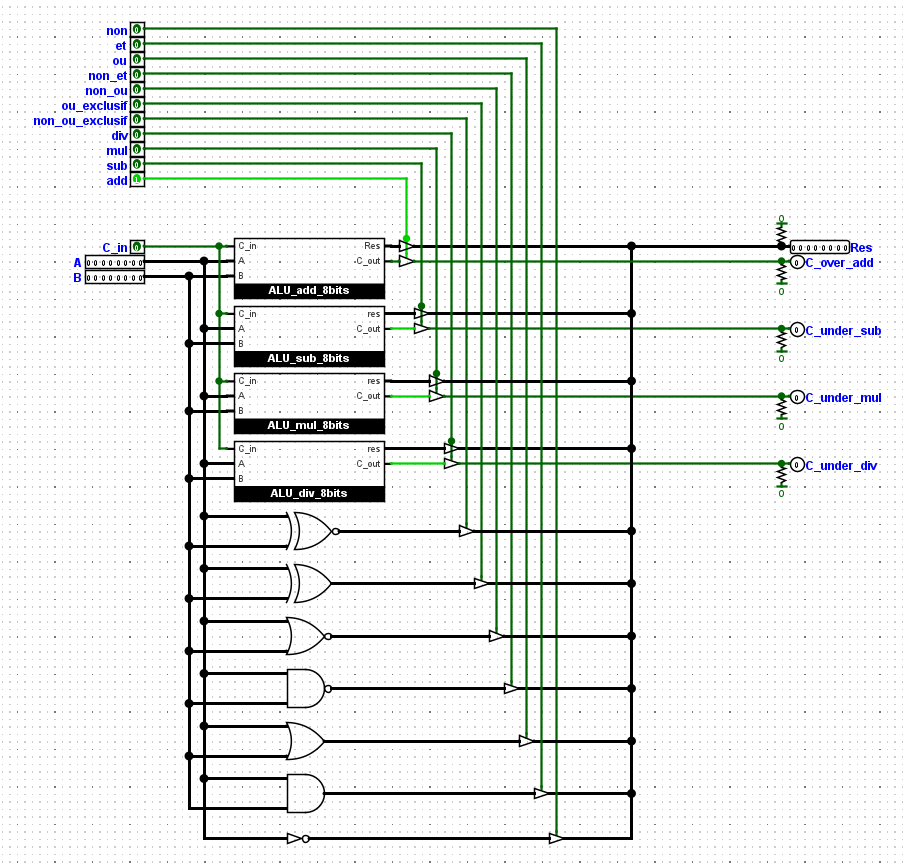

Electronique
- #Soudure
- #Proteus
- #KiCad
- #Logisim
- #VHDL

Ma passion m’ayant amené à faire des études d’ingénieur en Génie Electrique, j’y ai réalisé de nombreux projets, du simple adaptateur à la manette de console, en passant par le célèbre robot suiveur de ligne.
-
Moniteur pour vélo

Lors d’un projet en lien avec l’école nous avions la possibilité de choisir notre projet. Faisant du vélo, nous avons choisi avec mon coéquipier de réaliser un moniteur pour vélo capable de calculer la vitesse, la distance parcourue et gérer des temps de séance. A cela on a rajouté une veste avec clignotant pour assurer une meilleure sécurité.
AgrandirMoniteur pour vélo
-
L'objectif de ce projet était de réaliser un système capable de décrire efficacement les activités d’un cycliste. Même si nous avions au départ opter pour une version prototype sur plaquette, nous avons décidé au fil du projet de réaliser une alpha capable d’être utilisée sur une séance. Les problèmes de compacité et de miniaturisation sont donc très vite arrivés et j’ai opté pour des composants CMS, c’est le premier projet où j’en utilisais. Le choix du placement des composants principaux sur la carte était aussi contraint par l'ergonomie sportive souhaitée ici.
-
La carte à ainsi été réalisée sur Proteus, logiciel de CAO électronique utilisé par mon école, et fait 120*50 mm avec 33 composants et 73 pistes. Une fois toutes les fonctionnalités testées sur plaquette d’essai, j’ai réalisé le PCB en physique. Cependant, la carte comportait des imperfections de fabrication et demeurait inutilisable, et par manque de temps il m’était impossible d’en réaliser une seconde. J’ai cependant pu vérifier la compatibilité mécanique, et vous invite à découvrir la partie mécanique de ce projet que j’ai aussi réalisé ainsi que son github où vous trouverez tous les fichiers sources.
RétrécirL'objectif de ce projet était de réaliser un système capable de décrire efficacement les activités d’un cycliste. Même si nous avions au départ opter pour une version prototype sur plaquette, nous avons décidé au fil du projet de réaliser une alpha capable d’être utilisée sur une séance.
Les problèmes de compacité et de miniaturisation sont donc très vite arrivés et j’ai opté pour des composants CMS, c’est le premier projet où j’en utilisais. Le choix du placement des composants principaux sur la carte était aussi contraint par l'ergonomie sportive souhaitée ici.
La carte à ainsi été réalisée sur Proteus, logiciel de CAO électronique utilisé par mon école, et fait 120*50 mm avec 33 composants et 73 pistes.Une fois toutes les fonctionnalités testées sur plaquette d’essai, j’ai réalisé le PCB en physique. Cependant, la carte comportait des imperfections de fabrication et demeurait inutilisable, et par manque de temps il m’était impossible d’en réaliser une seconde. J’ai cependant pu vérifier la compatibilité mécanique, et vous invite à découvrir la partie mécanique de ce projet que j’ai aussi réalisé ainsi que son github où vous trouverez tous les fichiers sources.
-
-
Du transistor au CPU
Cherchant toujours à comprendre comment fonctionne ce qui m'entoure, je suis arrivé face aux processeurs et la question "ça fonctionne comment ?" c'est alors posée. Et quoi de plus efficace pour y répondre que d'en fabriquer un! J'ai alors ouvert Logisim Evolution, un logiciel de simulation logique, et encore aujourd'hui j'avance sur mon propre microprocesseur RISC-V.
AgrandirDu transistor au CPU
-
Le but de ce projet est avant tout de comprendre le fonctionnement et les étapes de création d’un (micro) processeur. J’ai donc décidé d’en réaliser un en partant des transistors et pour aller jusqu’à la puce gravée. Pour ce faire, j’utilise logisim-évolution, un logiciel de simulation logique capable de faire tourner des petits microprocesseurs de façon visuelle et de les convertir en VHDL pour les mettre sur des systèmes FPGA. Je travaille aussi sur des cartes Xilinx en VHDL. J’ai déjà réalisé un ALU 32 bits, en partant des transistors, capable de suivre 11 instructions personnalisées comme l’addition, la multiplication, ou les comparaisons binaires.
L’objectif est de réaliser un microprocesseur 32 bits, respectant le jeu d’instruction RISC-V. Avec comme première étape de réaliser les trois stades d’un SAP, les processeurs les plus simples à réaliser. Si vous voulez en apprendre plus sur ce projet, rendez-vous sur github où vous trouverez tous les fichiers sources.
RétrécirLe but de ce projet est avant tout de comprendre le fonctionnement et les étapes de création d’un (micro) processeur. J’ai donc décidé d’en réaliser un en partant des transistors et pour aller jusqu’à la puce gravée.
Pour ce faire, j’utilise logisim-évolution, un logiciel de simulation logique capable de faire tourner des petits microprocesseurs de façon visuelle et de les convertir en VHDL pour les mettre sur des systèmes FPGA. Je travaille aussi sur des cartes Xilinx en VHDL. J’ai déjà réalisé un ALU 32 bits, en partant des transistors, capable de suivre 11 instructions personnalisées comme l’addition, la multiplication, ou les comparaisons binaires. L’objectif est de réaliser un microprocesseur 32 bits, respectant le jeu d’instruction RISC-V. Avec comme première étape de réaliser les trois stades d’un SAP, les processeurs les plus simples à réaliser. Si vous voulez en apprendre plus sur ce projet, rendez-vous sur github où vous trouverez tous les fichiers sources.
-
-
Manette
La manette de jeu vidéo est l’un des controllers les plus répandus, mais son intégration dans des projets DIY ou Arduino peut s’avérer laborieuse pour de simples étapes de prototypages. J’ai donc décidé de réaliser ma propre manette avec pour objectif de la rendre facilement accessible sur Arduino.
AgrandirManette
-
Pouvoir contrôler et recevoir des informations lors d’un projet en robotique est primordial, mais l'implémentation est souvent chronophage et mal réalisée. J’ai donc décidé de réaliser un « controller » capable de répondre à cette problématique simplement et efficacement. Pour faciliter sa réalisation par tous.tes, je me suis contraint à n’utiliser que des composants traversants. Afin de faciliter l'implémentation dans n’importe quel projet, chaque élément dispose de son propre signal pouvant être traité indépendamment des autres.
-
La carte fait pour l’instant 100*53 mm (bords arrondis) avec près d’une trentaine de composants. Elle risque cependant d’évoluer encore car il faut y ajouter un système d’extension de port pour réduire son impact sur le nombre de pins de l’Arduino, ainsi qu’un écran pour y afficher plus d’informations. Comme tous mes projets, vous pouvez le retrouvez en accès libre sur github avec plus d’explications sur le déroulement du projet.
RétrécirPouvoir contrôler et recevoir des informations lors d’un projet en robotique est primordial, mais l'implémentation est souvent chronophage et mal réalisée. J’ai donc décidé de réaliser un « controller » capable de répondre à cette problématique simplement et efficacement.
Pour faciliter sa réalisation par tous.tes, je me suis contraint à n’utiliser que des composants traversants. Afin de faciliter l'implémentation dans n’importe quel projet, chaque élément dispose de son propre signal pouvant être traité indépendamment des autres. La carte fait pour l’instant 100*53 mm (bords arrondis) avec près d’une trentaine de composants. Elle risque cependant d’évoluer encore car il faut y ajouter un système d’extension de port pour réduire son impact sur le nombre de pins de l’Arduino, ainsi qu’un écran pour y afficher plus d’informations. Comme tous mes projets, vous pouvez le retrouvez en accès libre sur github avec plus d’explications sur le déroulement du projet.
-